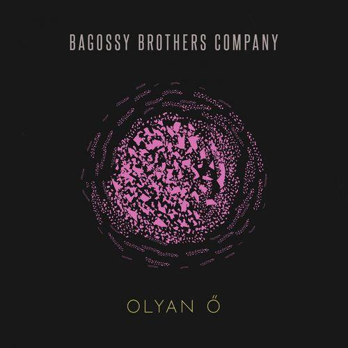

Olyan ő, hogy megáll
A szívem kalapál
Mégis olyan ember
Hogyha kell, odébbáll
Ő az úton merre jár
Abban nincsen rendszer
Kimerít, makacs és
Szemérmetlen is
Én vele nem beszélek
Hogyha kellek, ölelj át
Add a szíved, add a szád
És én utolérlek
Nézd, ez az érzés más!
Ugye te is akarod?
Ez a rendbontás
Most olyan édes
Hogy egy élet
Kevés lenne rá
Csak a baj, csak a bú
De ma senki szomorú
Nincsen körülöttem
Csak te lépkedsz fel-alá
Azt tedd ide, ezt meg rá...
Gyere ide szépen!
Jönnék én, ha te lennél
Az, kit nékem fújt a szél
Inkább itt megvárom
Míg a kezed táncra kér
És e tánchoz hű legyél
És én veled járom!
Nézd, ez az érzés más!
Ugye te is akarod?
Ez a rendbontás
Most olyan édes
Hogy egy élet
Kevés lenne rá
Szédít, csak játszik énvelem!
Szédít, játsszál még nekem
S én kiheverem!
Nézd, ez az érzés más!
Ugye te is akarod?
Ez a rendbontás
Most olyan édes
Hogy egy élet
Kevés lenne rá